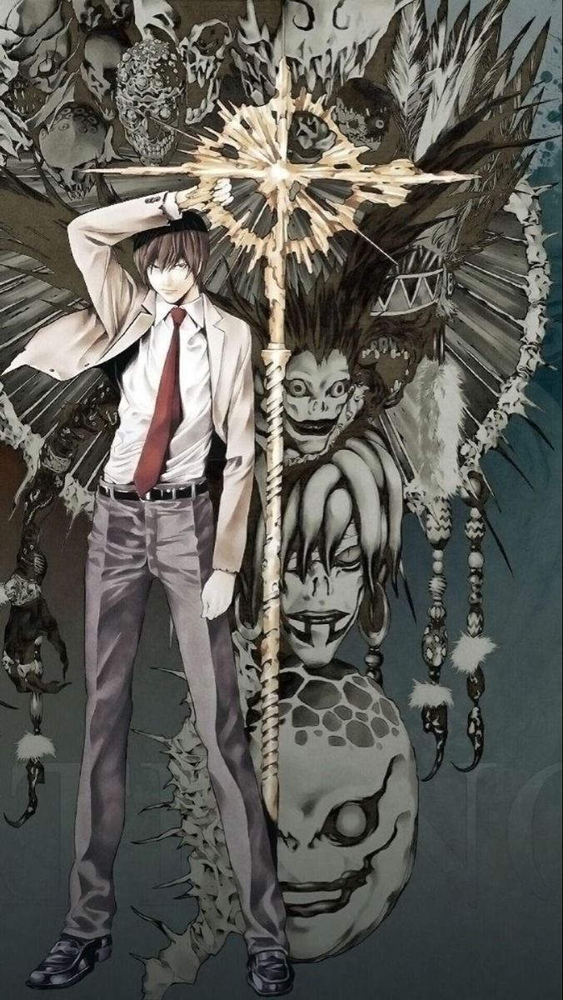

Anime and Manga Recommendations
My passion for manga and anime in general began few years ago while I was studying japanese at university. At the time I was one of the few people who wasn't interested in anime or manga, but when COVID 19 hit in 2020 a friend of mine recommended me to watch "Death Note". I was a little bit skeptical at first, but that manga is considered one of the best ever made, and it didn't disappoint. Since then I watched a lot of them, starting from the most popular ones, to the less known. The amazing thing about anime and drawing in 2D is the endless creative possibilites to transfer an idea into paper.
- Death Note
 The narrative of "Death Note" revolves around Light Yagami, a highly intelligent and ambitious high school student who stumbles upon a mysterious supernatural notebook known as the "Death Note." The notebook, dropped by the Shinigami (death god) Ryuk, possesses the power to kill anyone whose name is written in it, provided the writer visualizes the person's face. Intrigued by the Death Note's capabilities and its potential to rid the world of criminals and create his vision of a utopian society, Light embarks on a morally ambiguous journey as he takes on the persona of "Kira," the god of the new world. As Kira, Light begins to methodically eliminate criminals and individuals he deems unworthy of life, gaining widespread attention and instilling fear among the populace. His actions attract the interest of law enforcement agencies worldwide, leading to the emergence of enigmatic detective "L," whose unparalleled intellect and deductive reasoning pose a formidable challenge to Light's plans. The series delves into themes of morality, justice, power, and the consequences of playing god. It explores the psychological and ethical dilemmas faced by its characters as they navigate a complex game of cat and mouse, with each side employing intricate strategies and manipulation to outwit the other. As the battle of wits between Light and L intensifies, alliances shift, betrayals occur, and the line between right and wrong becomes increasingly blurred. Throughout its narrative, "Death Note" maintains a tense and suspenseful atmosphere, keeping readers on the edge of their seats as they witness the psychological warfare unfolding between its compelling characters. The series challenges conventional notions of heroism and villainy, prompting audiences to question the moral implications of wielding absolute power and the extent to which individuals are willing to go to achieve their ideals. With its gripping storyline, intricate plot twists, and thought-provoking themes, "Death Note" stands as one of the most iconic and influential manga series of the 21st century, leaving a lasting impact on the medium and captivating audiences worldwide with its exploration of the darker facets of human nature.
- Attack On Titan
 Attack On Titan is not only a piece of media for me, it's the reason why I'm still here.
Shingeki no Kyojin is a manga series written and illustrated by Hajime Isayama. It has also been adapted into an anime series, which has gained widespread popularity worldwide. The story is set in a world where humanity resides within enormous walled cities to protect themselves from gigantic humanoid creatures known as Titans, who devour humans seemingly without reason.
I personally recommend this anime to everyone for the themes that are presented:
Attack On Titan is not only a piece of media for me, it's the reason why I'm still here.
Shingeki no Kyojin is a manga series written and illustrated by Hajime Isayama. It has also been adapted into an anime series, which has gained widespread popularity worldwide. The story is set in a world where humanity resides within enormous walled cities to protect themselves from gigantic humanoid creatures known as Titans, who devour humans seemingly without reason.
I personally recommend this anime to everyone for the themes that are presented:
- - Existentialism and Human Struggle: The series delves deeply into existential themes, particularly the struggle for survival in the face of overwhelming adversity. Humanity faces existential threats from the Titans, which forces characters to confront their mortality and purpose in life.
- Freedom vs. Oppression: "Attack on Titan" explores the concept of freedom and the desire to break free from oppression. The walls that protect humanity also confine them, leading to a desire among characters to explore the outside world and reclaim their freedom from the Titans.
- Moral Ambiguity and Gray Areas:The series challenges traditional notions of morality by depicting characters who are forced to make difficult decisions in morally ambiguous situations. The line between good and evil is often blurred, and characters must grapple with the consequences of their actions.
- Power and Corruption: The series explores the corrupting influence of power and the lengths to which people will go to maintain their control over others. Various factions within the series vie for power and influence, leading to political intrigue and manipulation.
- Identity and Self-Discovery: Many characters in "Attack on Titan" struggle with issues of identity and self-discovery. They must come to terms with their pasts and reconcile their sense of self with the harsh realities of the world they live in.
- Trauma and PTSD: The series portrays the psychological impact of trauma and warfare on individuals. Characters grapple with PTSD and other mental health issues as they struggle to cope with the horrors they have witnessed and experienced.
- Sacrifice and Heroism:"Attack on Titan" explores the themes of sacrifice and heroism, as characters are forced to make sacrifices for the greater good of humanity. The series challenges conventional notions of heroism by depicting characters who are flawed and imperfect, yet still capable of acts of great bravery.
- Demon Slayer
 In Taisho-era Japan, Tanjiro Kamado is a kindhearted boy who makes a living selling charcoal. However, his peaceful life is shattered when a Demon slaughters his entire family. His little sister Nezuko is the only survivor, but she has been transformed into a Demon herself! Tanjiro sets out on a dangerous journey to find a way to return his sister to normal and destroy the Demon who ruined his life.
"One of the most remarkable aspects of the anime is how it portrays both good and evil characters. Unlike other anime, the villains in “Demon Slayer” are not one-dimensional characters with no backstory. Each antagonist has a tragic past, and the protagonist, Tanjiro, empathizes with them despite their wrongdoings. This reminds us of the importance of empathy and understanding, especially towards those we perceive as enemies.
Moreover, the anime touches on the theme of faith. The members of the Demon Slayer Corps, akin to Christian missionaries, are motivated by their faith and a mission to eradicate the demons. Despite facing numerous obstacles and hardships, they remain unwavering in their beliefs and continue to spread their message.
These themes are not only relevant to the anime but also to our lives as Christians. We are all called to spread the Gospel and should do so with empathy and understanding towards those who do not share our beliefs. We should also remain resolute in our faith, even in the face of adversity and challenges.
In conclusion, “Demon Slayer: Kimetsu no Yaiba” is not only an entertaining anime but also a thought-provoking one that explores significant themes such as empathy and faith. As we continue to watch the series and engage with its content, may we also contemplate how we can apply these themes to our own lives."
(Link)
In Taisho-era Japan, Tanjiro Kamado is a kindhearted boy who makes a living selling charcoal. However, his peaceful life is shattered when a Demon slaughters his entire family. His little sister Nezuko is the only survivor, but she has been transformed into a Demon herself! Tanjiro sets out on a dangerous journey to find a way to return his sister to normal and destroy the Demon who ruined his life.
"One of the most remarkable aspects of the anime is how it portrays both good and evil characters. Unlike other anime, the villains in “Demon Slayer” are not one-dimensional characters with no backstory. Each antagonist has a tragic past, and the protagonist, Tanjiro, empathizes with them despite their wrongdoings. This reminds us of the importance of empathy and understanding, especially towards those we perceive as enemies.
Moreover, the anime touches on the theme of faith. The members of the Demon Slayer Corps, akin to Christian missionaries, are motivated by their faith and a mission to eradicate the demons. Despite facing numerous obstacles and hardships, they remain unwavering in their beliefs and continue to spread their message.
These themes are not only relevant to the anime but also to our lives as Christians. We are all called to spread the Gospel and should do so with empathy and understanding towards those who do not share our beliefs. We should also remain resolute in our faith, even in the face of adversity and challenges.
In conclusion, “Demon Slayer: Kimetsu no Yaiba” is not only an entertaining anime but also a thought-provoking one that explores significant themes such as empathy and faith. As we continue to watch the series and engage with its content, may we also contemplate how we can apply these themes to our own lives."
(Link)